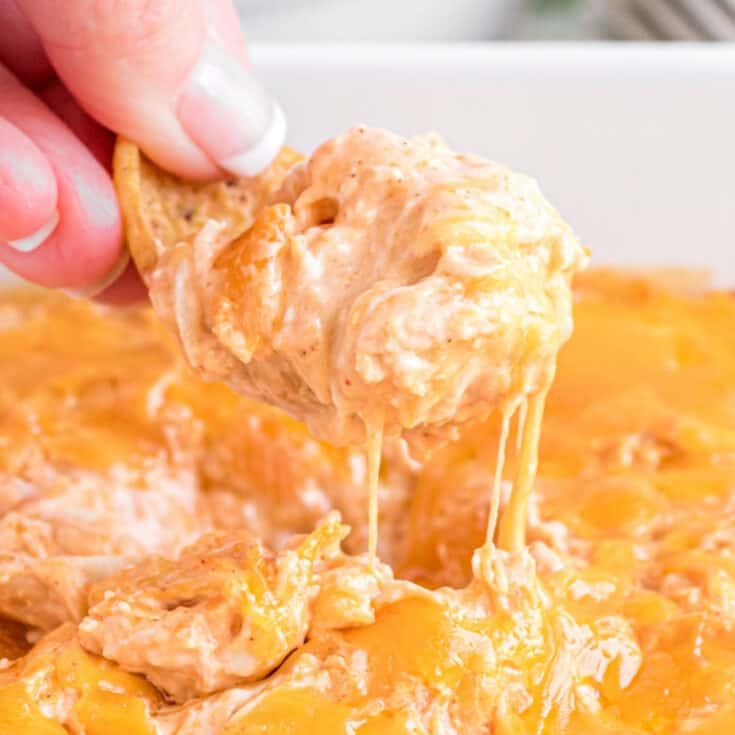

Buffalo Dip Chicken

Description
A spicy, creamy chicken dish that tastes like a dip!
Ingredients
- 2 spounds of boneless, skinless chicken breasts
- 1 cup (or more) of buffalo sauce
- 1 (8oz) block of cream cheese
- Chips or celery, for dipping (optional)
Steps
- Place chicken breasts into a crock pot
- Pour buffalo sauce over the chicken breasts to cover them
- Cook on low for 6-8 hours
- Add the block of cream cheese on top and cook for an additional 15 minutes
- Shred chicken while mixing in the cream cheese
- Serve on its own, over rice, with chips, or celery sticks!